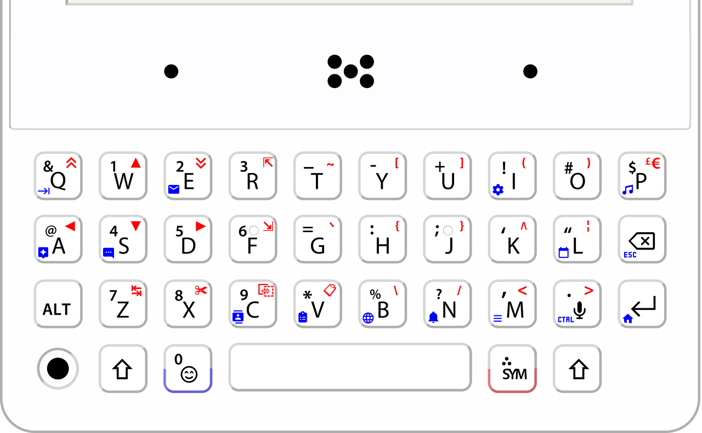

Minimal Keyboard Proper
A keyboard for the Minimal Phone (MP01) that types the way you do: a toolbar, word suggestions that learn your habits, auto-correct, grammar fixes, emoji, clipboard history and voice typing.
Install
- Download the APK of the version you want on your phone (see below) and open it. Android will ask you to allow installing from that app or browser.
- Go to
Settings›System›Languages & input›Virtual keyboard›Manage keyboardsand turn on Minimal Keyboard Proper. - Pick it as your input method.
- Open its settings and turn on Show toolbar to get suggestions, emoji, clipboard and voice buttons.
It replaces a keyboard for the phone's physical keys, so there is no on-screen keyboard. It is built for the Minimal Phone MP01. Later versions install over the top and keep your settings and learned words.
Two versions
English, Spanish, French is the everyday one. Its optional accented characters cover Spanish and French, and English needs none. All languages adds everything the original project had: the accent sets of German, Portuguese, Hungarian, Polish, the Scandinavian languages, Romanian, Lithuanian and more, a Cyrillic layer and Korean input. Both are the same keyboard otherwise. To switch, install the other APK over the one you have and everything you have learned stays.
What it does
Suggestions that learn
Completes the word you are typing, predicts the next one, and starts your sentences the way you do. It learns your words, phrases and habits, and you can forget any of them one by one.
Stronger auto-correct
Weighs the spell checker, 30,000 common words and your own words by how likely each slip is. Fixes the last word when you press Enter, and Backspace puts your word back.
Grammar and punctuation
their, there and they're, your and you're, its and it's, to and too, capitals, apostrophes, “I have went” and more, from rules that only act where a pattern is almost never right.
Auto-space
hello.world becomes hello. world, and lovehahaha becomes love hahaha. Web addresses and file names are left alone.
Shortcuts and my words
Type omw and get “on my way”. Add names and jargon so they are never fixed.
Emoji and clipboard
A keyboard-driven emoji picker with a skin tone setting, and a searchable clipboard history that skips what apps mark as sensitive.
Accented characters
Optional. Press a vowel again straight away for an accent: e twice gives é. French and Spanish, and in the All languages version many more.
Voice typing
The Mic key starts Google voice typing, or the system speech dialog if that is not turned on.
Map of the keyboard
Tap Sym and a map of the keyboard opens with one big symbol on each key: what Alt types, what Sym does, and what pressing a key again gives. Each tap of Sym turns the page.

Privacy
Everything it learns stays on your phone and is left out of backups. The app has no internet permission at all, so it cannot send anything anywhere. Nothing is learned from password fields or from fields that ask for no personalized learning, and learning can be turned off.
Credits
This is a modified version of other people's work, and full credit goes to them.
- oin, author of TitanPocketKeyboard, which all of this is based on.
- rickybrent, author of Minimal SymLayer Keyboard, the Minimal Phone fork that this version modifies. It added the emoji picker, the clipboard history, the Sym layer preview and the handling of the MP01's keys.
- meldavy and csaba-craft, who contributed to Minimal SymLayer Keyboard, and Mantas Norvaisa (Lithuanian multipress mapping) and danser (Cyrillic layout layer), whose changes are in its history.
- The list of common words comes from FrequencyWords by Hermit Dave (CC BY-SA 4.0). The emoji list is from Mange/emoji-data. The icons are Material Icons by Google (Apache 2.0).
It has no connection to Lersi's Minimal Phone Keyboard.